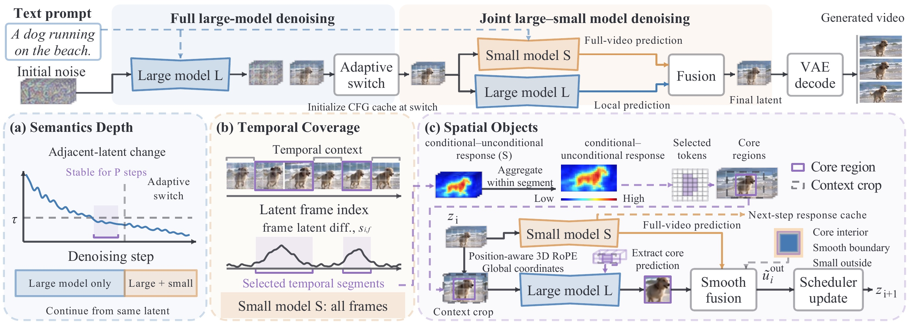

EcoVideo++
Characterizing and Exploiting Tri-dimensional Capability Boundaries
for Collaborative Video Diffusion
Abstract
Diffusion Transformers (DiTs) achieve strong video generation quality but incur substantial inference costs due to repeated processing of dense spatiotemporal tokens. Existing large–small model collaboration methods reduce this cost by assigning different denoising stages to models of different capacities, while still treating the entire video uniformly at each step. We observe that the capability difference between large and small DiTs is highly non-uniform not only along the denoising trajectory, but also across temporal segments and spatial regions. Based on this observation, we propose EcoVideo++, a training-free hierarchical capacity orchestration framework that progressively allocates large-model computation at step, temporal, and spatial levels. The small model provides global predictions, while the large model selectively refines difficult regions with preserved spatiotemporal context and smooth prediction fusion. Experiments on Wan2.1, Wan2.2, and CogVideoX demonstrate that EcoVideo++ achieves 2.29–2.93× speedup while keeping VBench within 0.0027 of the corresponding large-only models.
Method

Tri-dimensional collaborative video diffusion framework. The large model first denoises the full video and adaptively switches to joint denoising once the clean-latent estimate is stable (Semantics Depth). During joint denoising, the small model predicts the full video, while the large model processes context crops of the selected temporal segments (Temporal Coverage) and spatial cores (Spatial Objects); the predictions are smoothly fused before each scheduler update.
Setup
Generation settings of the three model pairs. Unless otherwise noted, videos on this page are generated with Wan2.1-14B + Wan2.1-1.3B (one video per prompt, seed 0) and are full, uncut outputs re-encoded with H.264 for web playback. Baseline videos use the same model pair and prompts.
| Model pair | Frames | FPS | Duration | Resolution (W × H) | Guidance scale | Inference steps | τ |
|---|---|---|---|---|---|---|---|
| Wan2.1-14B + Wan2.1-1.3B | 81 | 16 | 5 s | 1280 × 720 | 5.0 | 50 | 0.15 |
| Wan2.2-T2V-A14B + Wan2.1-1.3B | 81 | 16 | 5 s | 1280 × 720 | (3.0, 4.0) | 40 | 0.15 |
| CogVideoX-5B + CogVideoX-2B | 49 | 8 | 6 s | 720 × 480 | 6.0 | 50 | 0.15 |
Qualitative Results
Full videos generated by EcoVideo++.
Comparison with Baselines
Large-only inference, collaborative baselines, and EcoVideo++ on the same prompt. Scroll horizontally to see all six methods.
Per-prompt Example
Large-only inference and EcoVideo++ on the same prompt with five seeds (seed 0–4), shown side by side.
| Method | Exp. subject consistency ↑ | Exp. dynamic degree ↑ | Exp. motion smoothness ↑ | Seeds | Exp. dynamic clips E[K] | P(≥ 4 dynamic clips) |
|---|---|---|---|---|---|---|
| Large-only | 0.9627 | 0.6813 | 0.9752 | 5 | 3.407 | 49.00% |
| EcoVideo++ | 0.9589 | 0.6985 | 0.9728 | 5 | 3.493 | 52.50% |
Crop Boundaries
EcoVideo++ outputs with the selected spatial cores (solid orange boxes) and their context crops (dashed cyan boxes) overlaid. For each latent frame, the boxes of the latest denoising step that selected it are shown. The small model predicts the full video, while the large-model prediction of each core is smoothly fused back.
Failure Cases
Examples where EcoVideo++ produces unsatisfactory results.